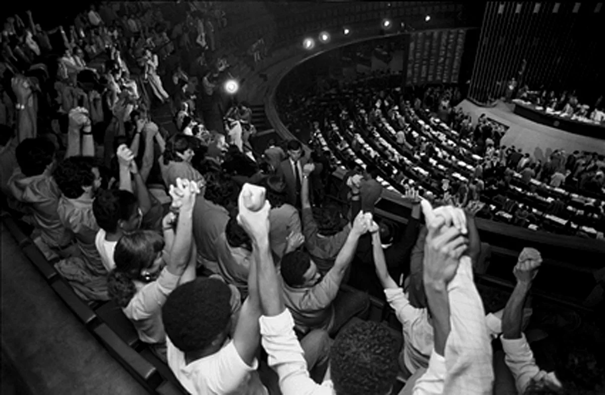
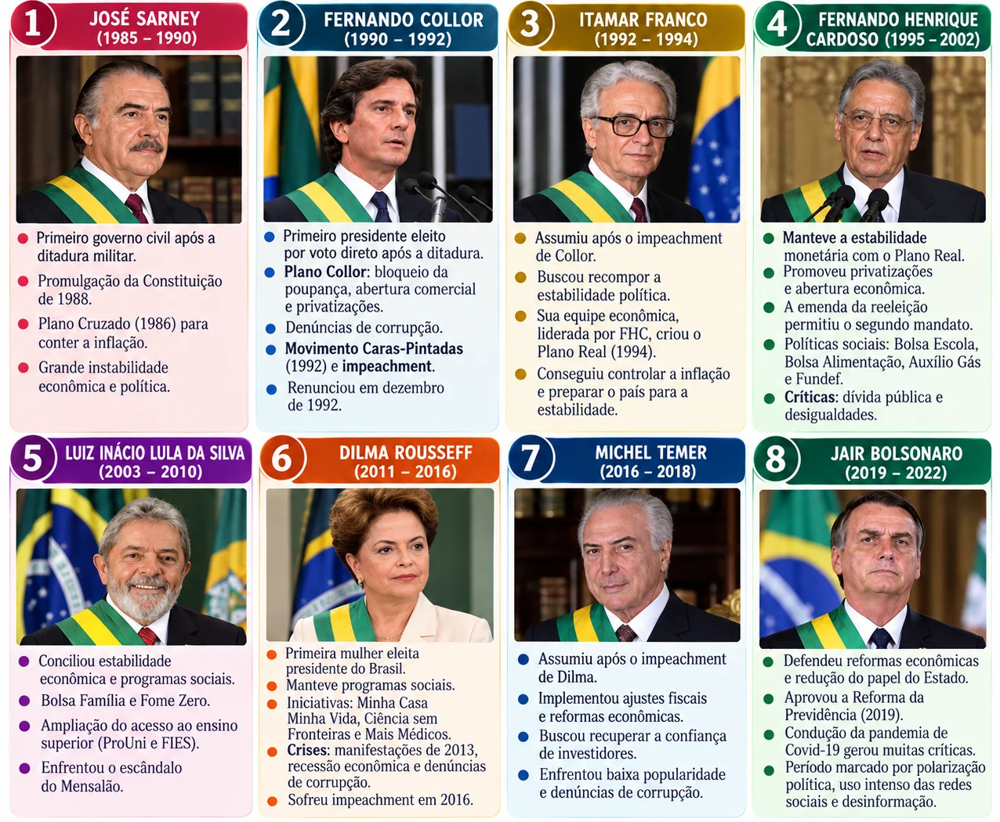
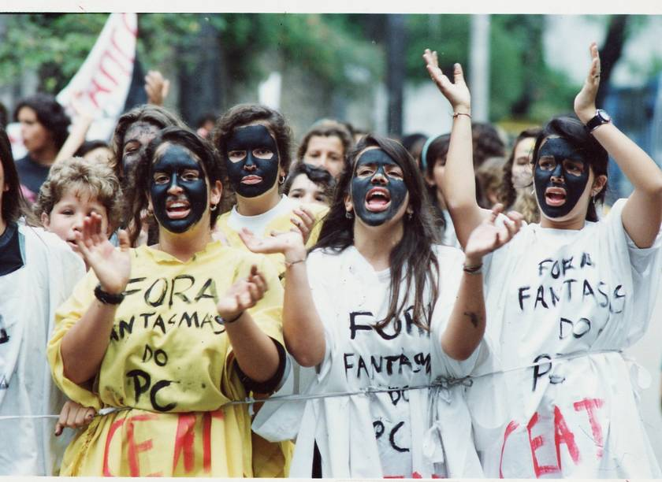
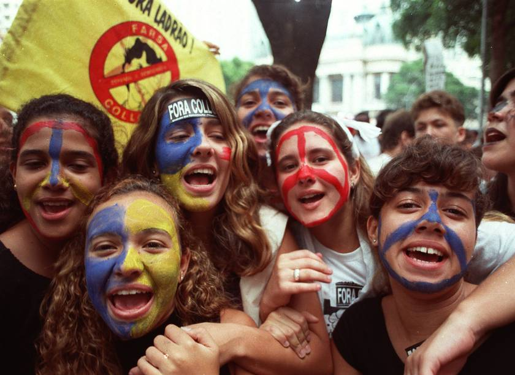
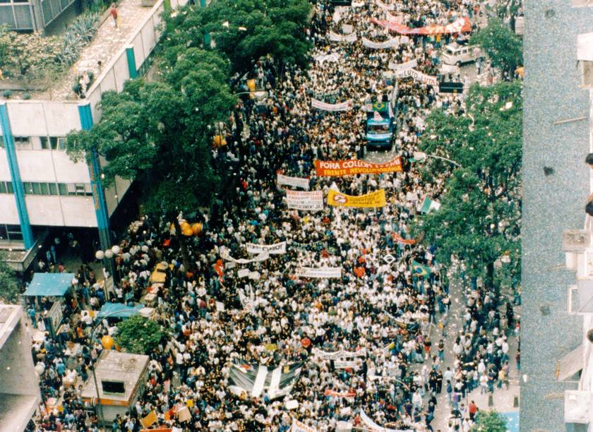
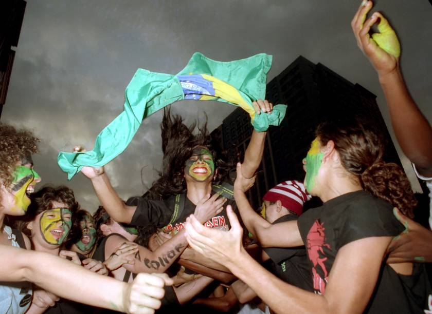
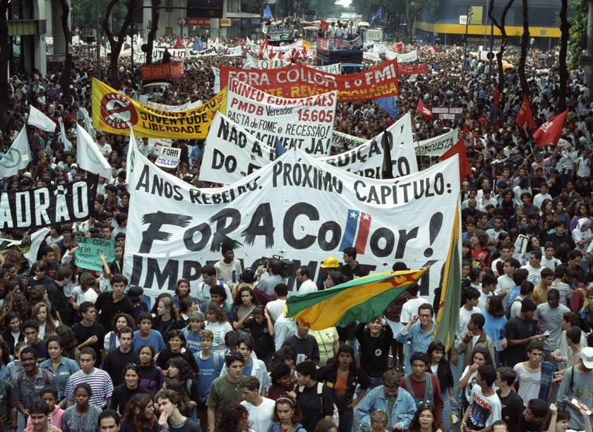

Matriz da sequência didática
Objetos de conhecimento, objetivos de aprendizagem (DC-GOEM) e habilidades de recomposição / eixos cognitivos.
| Objeto de conhecimento / conteúdo | Objetivos de aprendizagem (DC-GOEM) | Habilidades de recomposição / eixos cognitivos |
|---|---|---|
| Constituição de 1988 | (EM13CHS605) Analisar os princípios da declaração dos Direitos Humanos, recorrendo às noções de justiça, igualdade e fraternidade, identificar os progressos e entraves à concretização desses direitos nas diversas sociedades contemporâneas e promover ações concretas diante da desigualdade e das violações desses direitos em diferentes espaços de vivência, respeitando a identidade de cada grupo e de cada pessoa. | A1 – Identificar o processo de consolidação da democracia no Brasil. B1 – Compreender a importância da Constituição Federal de 1988 como marco da redemocratização no Brasil, destacando a consolidação dos direitos humanos, sociais e políticos, e sua vigência nos governos democráticos subsequentes. |
| Direitos Humanos | (GO-EMCH605D) Avaliar como o conjunto de valores dos Direitos Humanos (direito à vida e à liberdade, à liberdade de opinião e de expressão, o direito ao trabalho e à educação, entre outros) se manifestam concretamente para o indivíduo, através do estudo do cotidiano, de documentários sobre violação de direitos fundamentais em guerras e da filosofia humanista sobre os valores éticos universais para perceber que a defesa de tais direitos faz parte indispensável de uma sociedade justa e inclusiva. | C1 – Avaliar os princípios da Declaração Universal dos Direitos Humanos e sua efetivação na contemporaneidade. |
| Desigualdades sociais no Brasil | (GO-EMCH605D) Avaliar como o conjunto de valores dos Direitos Humanos (direito à vida e à liberdade, à liberdade de opinião e de expressão, o direito ao trabalho e à educação, entre outros) se manifestam concretamente para o indivíduo, através do estudo do cotidiano, de documentários sobre violação de direitos fundamentais em guerras e da filosofia humanista sobre os valores éticos universais para perceber que a defesa de tais direitos faz parte indispensável de uma sociedade justa e inclusiva. | C1 – Avaliar o contexto histórico de construção das desigualdades no Brasil. B2 – Analisar como as desigualdades afetam diferentes identidades (étnicos, culturais, de gênero, socioeconômicas). |
Constituição de 1988
Redemocratização no Brasil
Matriz de Habilidades Essenciais DC-GOEM:
(EM13CHS605) Analisar os princípios da declaração dos Direitos Humanos, recorrendo às noções de justiça, igualdade e fraternidade, identificar os progressos e entraves à concretização desses direitos nas diversas sociedades contemporâneas e promover ações concretas diante da desigualdade e das violações desses direitos em diferentes espaços de vivência, respeitando a identidade de cada grupo e de cada pessoa.
Objeto de Conhecimento:
• Constituição de 1988
Leia o texto.
Direitos fundamentais e humanos marcam o texto constitucional de 1988
No Brasil, o período militar foi conturbado para os direitos humanos. O desrespeito a eles foi determinante para a inclusão das garantias individuais e sociais presentes na Constituição federal de 1988. O ex-ministro chefe da Controladoria-Geral da União (CGU) Jorge Hage, que participou da Assembleia Nacional Constituinte, recorda que o momento de elaboração da Carta “foi a de recuperação de direitos, sobretudo.”
Hager diz que não houve na história do país momento de maior entrosamento entre o parlamento e a sociedade. Estabeleceu-se uma relação direta importantíssima e inédita. Desconheço outro momento histórico em que isso tenha funcionado igual”, afirmou o ex-ministro-chefe da CGU, que também ressaltou que os direitos humanos e fundamentais inseridos no texto constitucional foram construídos pelo próprio povo, que ocupavam o parlamento, junto com os constituintes.

Pela Constituição de 1988, o homem se sobrepõe ao Estado. As garantias e os direitos fundamentais do cidadão aparecem logo nos primeiros artigos. No primeiro, por exemplo, é estabelecido o princípio da cidadania, da dignidade da pessoa humana e os valores sociais do trabalho. Direitos civis, políticos, econômicos, sociais e culturais dos cidadãos estão no texto constitucional. Resguardado pela Carta Magna, os direitos fundamentais colocam o Brasil como um dos países com o mais completo ordenamento jurídico em relação aos direitos humanos.
Além das garantias fundamentais expostas na Constituição, que asseguram direitos aos cidadãos, as prerrogativas também são resguardadas pelos direitos humanos. Ambos possuem a mesma essência e finalidade, que é compor um conjunto de leis inerentes à dignidade da pessoa humana. Juntas, as legislações proporcionam, aos cidadãos, o direito à vida, ao trabalho, à educação e à liberdade de opinião e expressão. Todos, sem distinção, merecem as proteções.
Os direitos humanos são universais e resultam de lutas contra injustiças, sendo garantidos por tratados internacionais. Já os direitos fundamentais são aqueles reconhecidos e assegurados pela Constituição Federal de 1988.
O constitucionalista Cristiano Paixão, professor de Direito da Universidade de Brasília (UnB), explica que os direitos humanos e fundamentais possuem o mesmo status, a mesma hierarquia e a mesma força normativa. “São previstos em documentos internacionais e constituições e protegem o ser humano em diversas áreas”. Afirma. Paixão ressalta ainda que os direitos garantem a democracia no país ao permitir que ideias de igualdade, liberdade, reconhecimento e justiça ganhem concretude. “Sem essa capacidade de garantir direitos de forma recíproca, individual e coletiva, nenhuma sociedade poderá se considerar democrática”.
Fonte: Governo do Brasil, com informações da ONU. Disponível em: https://abre.ai/nxKF. Acesso em: 11 set. 2025.
Direitos Fundamentais e Humanos
Responda à atividade de leitura e interpretação sobre a Constituição de 1988.
SAEGO e ENEM
Aprofunde o estudo do Texto I com as duas atividades abaixo.
Leia o texto.

A Nova República
A Nova República no Brasil, que se inicia a partir de 1985 com o fim do regime militar, marcou o retorno do Brasil à democracia e a busca pela reconstrução das instituições políticas, econômicas e sociais. Cada governo, tinha o grande desafio da consolidação da democracia e a efetivação dos direitos estabelecidos pela Constituição de 1988, visto que o país, nos anos anteriores, foi responsavel por grandes violações de direitos fundamentais para toda a sociedade. Ao fim da Ditadura militar, o Brasil estava imerso num grande contexto de crise econômica com a hiperinflação, o que afetou diretamente toda a socidade nos anos que se sucederam.
Governo José Sarney
José Sarney foi o primeiro governo civil após anos de ditadura militar, o que vai marcar o início da chamada Nova República. Sarney chega à presidência de maneira indireta após a vitória da chapa de Tancredo e Sarney. Com o falecimento de Tancredo Neves, Sarney assumiu o mandato num processo de reconstrução democrática do país.
Seu governo foi marcado por grande instabilidade política e econômica. Na política, o maior marco de seu governo foi a apromulgação da Constituiçao de 1988.
Já no campo econômico, Sarney enfrentou o grave problema da hiperinflação. Para tentar controlar a crise, foi lançado o Plano Cruzado em 1986, que instituiu uma nova moeda, congelou preços e salários e aumentou a esperança de estabilidade. Inicialmente, o plano teve sucesso, mas logo a inflação voltou a suibir, o que o obrigou o governo a adotar outros programas, que também não foram bem-sucedidos. O final do seu governo foi marcado por extrema impopularidade e por grande crise econômica, o que contribuiu para que não elegesse um sucessor nas eleições de 1989.

Governo Fernando Collor de Mello
Fernando Collor foi o primeiro presidente eleito por voto direto após anos de ditadura militar. Seu governo teve como prioridade o combate à grave crise econômica que o Brasil enfrentava no início da década de 1990. Para isso, Collor implementou um conjunto de medidas que ficaram conhecidas como Plano Collor, cujas ações tiveram grande impacto sobre a economia e a vida da população brasileira.
Nesse sentido, as principais medidas do plano foram:
- A troca da moeda brasileira: de cruzado-novo para cruzeiro, mas sem corte de zero; os cruzados-novos bloqueados poderiam ser usados por 60 dias para o pagamento de impostos, taxas, contribuições e obrigações previdenciárias e, por 180 dias, podiam ser transferidos entre pessoas físicas e jurídicas;
- Confisco da poupança: bloqueio de valores acima de 50 mil cruzeiros por 18 meses;
- Remoção de mecanismos que ajustavam automaticamente os preços à inflação com o objetivo de reduzir a inércia inflacionária;
- Abertura comercial: redução de tarifas de importação;
- Criação do IOF (Imposto sobre Operações Financeiras): com pagamento de 8%;
- Privatizações: início do programa de desestatização.
Apesar de todo o discurso de modernização e controle inflacionário, algumas medidas adotadas por Collor, principalmente o confisco da poupança, geraram grande insatisfação popular. Além disso as denúncias de corrupção contra seu governo minaram ainda mais o seu apoio popular.
Movimento Caras-Pintadas





Disponível em:https://memoria.oglobo.globo.com/fotos/caras-pintadas-contra-collor-9430223 . Acesso em: 14/10/2026.
Com todo o Escândalo, o governo Collor se tornou insustentável. Diversas mobilizações e protestos contrários a Collor, já em andamento, tiveram seu ápice nos meses de agosto e setembro de 1992. No dia 16 de agosto, preocupado, o presidente discursou pedindo para que a população saísse e apoiasse a manutenção do governo dele, utilizando as cores da bandeira do Brasil. Contudo, em vez disso, as pessoas protestaram contra a permanência de Collor na presidência. No mesmo dia do discurso de Collor, 16 de agosto, registrou-se protestos em diversas cidades do país. Nelas, os milhares que protestaram, saíram às ruas com os rostos pintados de preto, verde e amarelo e deram a simbologia e o nome da mobilização: Movimento Caras-Pintadas. Essas manifestações tiveram continuidade por todo o mês de setembro até que, em 2 de outubro de 1992, Collor finalmente foi colocado frente à abertura de um processo de impeachment no Senado. Em dezembro do mesmo ano, Collor renunciou na tentativa de evitar a cassação de seus direitos políticos. No entanto, o Senado decidiu seguir com o julgamento e o declarou inelegível por oito anos, por crime de responsabilidade, uma infração cometida por autoridades públicas.
O movimento dos caras-pintadas, teve grande importância política e symbolics para o Brasil, pois ele respresentou a força da mobilização popular, especialmente da juventude, na defesa da consolidação da democracia e contra a corrupção.
Além das políticas econômicas, foi também na Nova República, em especial durante o governo Collor, que foram criadas leis importantes para o Brasil. Algumas delas:
- Código de Defesa do Comsumidor (CDC) – Criado em 1990, estabeleceu direitos básicos aos consumidores e regulamentou relações de consumo.
- Estatuto da Criança e do Adolescente (ECA) – Também de 1990, é a principal lei que assegura os direitos das crianças e adolescentes no Brasil.
- Lei do Sistema Único de Saúde (SUS) – Em 1990, foi a lei que regulamentou o SUS, garantindo o acesso universal e integral à Saúde.
- Lei Rouanet – Sancionada em 1991, instituiu mecanismos para o incentive à produção e ao consumo de bens culturais, como espetáculos e exposições.
- Lei de Improbidade Administrativa – Promulgada em 1992, estabeleceu normas para combater a corrupção e a má conduta de agentes públicos.
Governo Itamar Franco e Fernando Henrique Cardoso
Itamar Franco assume a presidência após o impeachment de Fernando Collor de Mello em 1992, num contexto de forte crise política. Esse cenário exigiu de Itamar grande habilidade para restabelecer a estabilidade política e a confiança da sociedade nas instituições democráticas. Itamar adotou um modelo de governo conciliador, buscou dialogar com diferentes partidos e compor um governo de unidade nacional, o que ajudou a reduzir as tensões após o período turbulento que levou à queda de Collor. Essa postura foi fundamental para garantir a governabilidade e preservar a jovem democracia brasileira.
Na área econômica, Itamar enfrentou o grande desafio da hiperinflação, que corroía o poder de compra da população. Sua principal medida foi a criação do Plano Real (1994), elaborado por sua equipe econômica liderada por Fernando Henrique Cardoso, então ministro da Fazenda. O plano introduziu uma nova moeda, o Real, e estabeleceu mecanismos de controle da inflação. Foi um marco na história econômica do país, garantindo estabilidade monetária e abrindo caminho para um novo ciclo de desenvolvimento.
No campo social, o governo de Itamar buscou fortalecer políticas públicas voltadas à redução das desigualdades. Houve avanços em programas de combate à fome e à pobreza, bem como investimentos em áreas como educação e saúde, ainda que de forma limitada devido à prioridade dada ao controle da inflação.
O governo de Itamar Franco, foi sucedido por Fernando Henrique Cardoso, que marcou um dos períodos mais importantes da Nova República, especialmente pela consolidação da estabilidade econômica alcançada com o Plano Real.
No campo político, seu governo aprovou uma emenda constitucional que permitiu a reeleição para cargos executivos, fazendo seu governo se estender por dois mandatos (1995 – 2002). Essa articulação, só foi possível a partir das alianças construídas no seu governo, que garantiram governabilidade.
Na economia, a manutenção do Plano real, conseguiu controlar a hiperinflação e trazer estabilidade monetária. Além disso, FHC promoveu uma política de privatizações, vendendo empresas estatais em setores como telecomunicações, energia e mineração, com o objetivo de reduzir gastos públicos e atrair investimentos.
Sua gestão também buscou alinhar o Brasil às práticas do mercado internacional, adotando políticas de abertura econômica e incentivo à globalização. No entanto, essas políticas enfrentou fortes críticas da população e de setores políticos, principalmente pelo aumento da dívida pública e pela dependência de empréstimos internacionais. Essas políticas contribuíram para acentuar ainda mais as desigualdades sociais.
FHC criou alguns programas de combate à pobreza, que serviu de base para políticas nos governos posteriores. Entre eles, destacam-se o Bolsa Escola, o Bolsa Alimentação e o Auxílio Gás, que mais tarde seriam unificados no Bolsa Família. Na educação, implementou o Fundo de Manutenção e Desenvolvimento do Ensino Fundamental (Fundef), que ampliou o financiamento da educação básica e contribuiu para o aumento da escolarização no país.
O governo de Fernando Henrique marcou um período importante de estabilidade política e econômica. Sua gestão foi fundamental para a consolidação da democracia. Porém, houve também um aprofundamento das desigualdades e o aumento da dívida, esses pontos forma temas centrais dos governos posteriores.
Governo Lula e Dilma
O primero mandato do governo Lula (2003-2006) marcou uma nova fase a política brasileira, caracterizada pelo equilíbrio entre crescimento econômico, inclusão social e responsabilidade fiscal.
No campo econômico, Lula manteve a estabilidade herdada do governo anterior, preservando o tripé macroeconômico baseado no câmbio flutuante, no superávit primário e no controle da inflação por meio da taxa de juros. Essa postura transmitiu confiança ao mercado e atraiu investimentos. Ao mesmo tempo, o governo apostou em políticas de desenvolvimento, como o fortalecimento da agricultura familiar, o incentivo às exportações e o programa de aceleração da infraestrutura.
Na área social, as políticas de combate à pobreza e à fome ganharam destaque. O Bolsa Família, criado em 2003, unificou programas de transferência de renda já existentes, garantindo auxílio financeiro a famílias de baixa renda, desde que cumprissem compromissos como manter os filhos na escola e com a vacinação em dia. Outro destaque foi o Fome Zero, iniciativa voltada a enfrentar a insegurança alimentar, além de programas de valorização do salário mínimo, que aumentaram o poder de compra das camadas mais pobres.
Lula adotou políticas na educação, como o ProUNi (Programa Universidade para Todos) e a ampliação do FIES (Fundo de Financiamento Estudantil), aumentou o acesso da população mais pobre ao ensino superior. Na saúde com a ampliação do SUS e o acesso a medicamentos, o que resultou em avanços significativos onde milhões de brasileiros saíram da linha da pobreza. Muitas dessa política só foram possíveis a partir do perfil político conciliatórios com alianças com diversos partidos de centro. Assim, o primeiro governo Lula consolidou a imagem do Brasil como um país em processo de crescimento econômico com maior justiça social.
Porém, seu governo também foi palco em um dos maiores escândalos de corrupção, o Mensalão. O esquema consistia no pagamento regular de mesadas a parlamentares de diferentes partidos em troca de apoio político no Congresso Nacional. O escândalo gerou uma forte crise política, abalou a imagem do governo e colocou em xeque a confiança da população dos representantes eleitos. Em 2012, o Supremo Tribunal Federal (STF) julgou o caso condenando dirigentes políticos, empresários e figuras importantes do PT. Esse julgamento marcou a história política e jurídica do país por ser um dos primeiros a responsabilizar e punir autoridades de alto escalão por corrupção.
Mesmo com o escândalo envolvendo seu governo, o presidente Lula conseguiu se manter no cargo e foi reeleito em 2006 e elegeu a sua candidata Dilma Rousseff.
Primeira mulher a ser eleita presidenta da República do Brasil, governo de Dilma Rousseff representou continuidade do projeto político de Lula. Se primeiro mandato iniciou em 2011 com a promessa de manter os avanços sociais e econômicos obtidos nos anos anteriores, mas enfrentou um cenário mais instável, tanto interno quanto externo.
No campo econômico, Dilma deu continuidade ao Programa Bolsa Família e ao Programa de Aceleração do Crescimento (PAC), além de lançar programas de destaque, como o Minha Casa Minha Vida, voltado para habitação popular, e o Ciência sem Fronteiras, que ofereceu bolsas de estudo no exterior para estudantes brasileiros. Outro ponto importante foi o Programa Mais Médicos, criado em 2013 para ampliar o atendimento de saúde em regiões carentes, muitas vezes com a participação de médicos estrangeiros.
Apesar desses avanços, a economia começou a apresentar sinais de enfraquecimento a partir de 2012, agravados pela crise internacional e por dificuldades estruturais do país. A partir de 2014, o Brasil entrou em uma profunda recessão econômica, com queda do PIB, aumento do desemprego e inflação em alta.
Em 2013, grandes manifestações populares tomaram as ruas do país, inicialmente contra o aumento das tarifas de transporte, mas que rapidamente se ampliaram para críticas à corrupção, aos serviços públicos precários e aos altos gastos com a Copa do Mundo e a Operação Lava Jato, que revelou um amplo esquema de corrupção envolvendo a Petrobras, partidos políticos e grandes empreiteiras. Embora Dilma não tenha sido acusada diretamente de envolvimento, sua imagem e a de seu governo foram profundamente atingidas pelas denúncias. Essas manifestações revelaram um clima de insatisfação que se intensificou nos anos seguintes.
Reeleita em 2014 em uma disputa acirrada, Dilma enfrentou um Congresso hostil e crescentes pressões políticas. Em 2016, após acusações de crime de responsabilidade por manobras fiscais conhecidas como “pedaladas fiscais”, ela sofreu um processo de impeachment, sendo afastada do cargo. Seu vice, Michel Temer, assumiu a Presidência.
Mesmo garantida pela Constituição de 1988, a nossa democracia ainda é muito frágil e enfrenta muitos desafios. O impeachment de Dilma Rousseff, em 2016, mostrou bem essa fragilidade. Embora o processo esteja previsto em lei, muitos especialistas e parte da sociedade questionaram se realmente havia crime de responsabilidade ou se tudo foi resultado de disputas políticas e de interesses no Congresso. Esse episódio revelou que, no Brasil, a estabilidade de um governo pode depender mais de acordos políticos do que do respeito total às regras democráticas e à vontade do povo expressa nas eleições. Além disso, aumentou a desconfiança nas instituições e aprofundou a divisão na sociedade.
Polarização Política
Com o impeachment da presidenta Dilma Rousseff e a ascensão de seu vice, Michel Temer, à presidência, a polarização política no Brasil se intensificou de forma significativa. O embate entre as ideologias de esquerda e direita ganhou força e levou milhares de pessoas às ruas para defender seus projetos. As eleições de 2018 representaram o auge dessa disputa, com a candidatura de Jair Messias Bolsonaro e de Fernando Haddad, apoiado pelo ex-presidente Luiz Inácio Lula da Silva.
Marcado por escândalos e pela disseminação de fake news, esse processo eleitoral evidenciou o papel central das redes sociais e da internet na formação de opiniões e no resultado das urnas, isso revelou um novo contexto político da sociedade brasileira, com a inserção das tecnologias e o uso das redes sociais por diferentes públicos.
O pleito de 2018 foi vencido por Jair Bolsonaro, que teve um governo marcado por forte polarização política e por debates intensos sobre os rumos do país. Na economia, seu governo retomou à agenda liberal dos governos de Collor e FHC, com foco em privatizações, reformas e redução do papel do Estado, sob a liderança do ministro da Economia, Paulo Guedes. A reforma da Previdência (2019) foi a principal medida aprovada nesse campo.
No campo social e político, o governo enfrentou muitas críticas pela condução da pandemia da Covid-19. As divergências em relação à vacinação, ao uso de máscaras, o incentivo do uso de medicações sem a devida comprovação científica e às medidas de isolamento geraram forte repercussão no Brasil e no exterior.
Texto elaborado para fins didáticos. NUREDI.
O Terceiro governo Lula (2023-2026)
Luiz Inácio Lula da Silva iniciou seu terceiro mandato como presidente da República em 1º de janeiro de 2023, após vencer as eleições de 2022 em uma disputa marcada por forte polarização política. Sua eleição ocorreu em um contexto de profundas divisões na sociedade brasileira, intensificadas durante os anos anteriores, especialmente em torno de diferentes concepções sobre democracia, economia, políticas sociais e papel do Estado. O novo governo assumiu também após os acontecimentos de 8 de janeiro de 2023, quando grupos que contestavam o resultado eleitoral invadiram e depredaram as sedes dos Três Poderes, em Brasília.
No campo político, o terceiro governo Lula teve como uma de suas principais características a tentativa de reconstruir o diálogo entre o governo federal, o Congresso Nacional, os governos estaduais, os municípios e diferentes setores da sociedade.
Diferentemente dos dois primeiros mandatos de Lula, realizados em um período de maior predominância política do Partido dos Trabalhadores, o terceiro mandato ocorre em um cenário de maior fragmentação partidária e forte presença de forças políticas de oposição no Congresso. A necessidade de construir uma ampla base de apoio levou o governo a estabelecer alianças com diferentes partidos e grupos políticos. Essa composição ampliou a capacidade de negociação do Executivo, mas também tornou a relação com o Congresso um dos principais desafios do mandato. A aprovação de projetos e reformas passou a depender de negociações constantes entre o governo e diferentes forças políticas.
Na política externa, o governo retomou uma atuação mais ativa do Brasil em organismos multilaterais, buscando ampliar relações com diferentes países e defender pautas relacionadas ao desenvolvimento sustentável, combate à fome, redução das desigualdades e reforma da governança internacional. Em 2026, a defesa da soberania nacional e dos interesses brasileiros em áreas estratégicas, como petróleo e minerais, também passou a ocupar espaço importante no discurso presidencial.
A política do governo combina investimentos públicos (Novo PAC), transferência de renda, reformas estruturais (Reforma Tributária com cashback e ajustes na cesta básica) e foco no crescimento com responsabilidade fiscal.
Economicamente, registram-se avanços como PIB de R$ 12,7 trilhões em 2025, crescimento acumulado do PIB de 1,9% (2º tri/2026), desemprego em 5,4% e inflação (IPCA) em 4,22% em 12 meses até agosto de 2026. No entanto, persistem desafios fiscais no controle da dívida, juros e gastos públicos.
Na área social, o governo reestruturou e ampliou programas para combate à pobreza e inclusão, destacando-se a recriação do Bolsa Família e a retomada do Minha Casa, Minha Vida, além de novas iniciativas em educação e saúde. A despeito dos avanços apontados pela gestão pública, pesquisas como a Ipsos-Ipec (setembro/2026) revelam que a avaliação popular ainda é predominantemente crítica em setores como gastos públicos, inflação, saúde e segurança.
Em setembro de 2026, o Brasil vive um novo período de intensa disputa política em razão das eleições gerais previstas para outubro. O cenário permanece marcado pela polarização entre diferentes projetos políticos para o país.
Texto elaborado para fins didáticos. NUREDI.
Brasil Democrático: governos e participação popular
Responda à atividade de leitura e interpretação sobre a Nova República e os governos democráticos brasileiros.
Direitos Humanos
Direitos Humanos
Matriz de Habilidades Essenciais DC-GOEM:
(GO-EMCH605D) Avaliar como o conjunto de valores dos Direitos Humanos (direito à vida e à liberdade, à liberdade de opinião e de expressão, o direito ao trabalho e à educação, entre outros) se manifestam concretamente para o indivíduo, através do estudo do cotidiano, de documentários sobre violação de direitos fundamentais em guerras e da filosofia humanista sobre os valores éticos universais para perceber que a defesa de tais direitos faz parte indispensável de uma sociedade justa e inclusiva.
Objeto de Conhecimento:
• Direitos Humanos
Leia o texto.
Texto III
Prof.º Me. Wanderson Claudio da Silva — C.E. Gabriel José de Moura – CRE Jussaras
Leia abaixo a introdução e cinco artigos da Declaração dos Direitos do Homem e do Cidadão onde é possível identificar o “nascimento” dos direitos humanos.
DECLARAÇÃO DOS DIREITOS DO HOMEM E DO CIDADÃO DE 1789
Os representantes do povo francês, constituídos em ASSEMBLEIA NACIONAL, considerando que a ignorância, o esquecimento ou o desprezo dos direitos do homem são as únicas causas das desgraças públicas e da corrupção dos Governos, resolveram expor em declaração solene os direitos naturais, inalienáveis e sagrados do Homem, a fim de que esta declaração, constantemente presente em todos os membros do corpo social, lhes lembre sem cessar os seus direitos e os seus deveres; a fim de que os actos do Poder legislativo e do Poder executivo, a instituição política, sejam por isso mais respeitados; a fim de que as reclamações dos cidadãos, doravante fundadas em princípios simples e incontestáveis, se dirijam sempre à conservação da Constituição e à felicidade geral.
Por consequência, a ASSEMBLEIA NACIONAL reconhece e declara, na presença e sob os auspícios do Ser Supremo, os seguintes direitos do Homem e do Cidadão:
Artigo 1º- Os homens nascem e são livres e iguais em direitos. As distinções sociais só podem fundar-se na utilidade comum.
Artigo 2º- O fim de toda a associação política é a conservação dos direitos naturais e imprescritíveis do homem. Esses Direitos são a liberdade. a propriedade, a segurança e a resistência à opressão.
[...]
Artigo 4º- A liberdade consiste em poder fazer tudo aquilo que não prejudique outrem: assim, o exercício dos direitos naturais de cada homem não tem por limites senão os que asseguram aos outros membros da sociedade o gozo dos mesmos direitos. Estes limites apenas podem ser determinados pela Lei.
[...]
Artigo 11º- A livre comunicação dos pensamentos e das opiniões é um dos mais preciosos direitos do Homem; todo o cidadão pode, portanto, falar, escrever, imprimir livremente, respondendo, todavia, pelos abusos desta liberdade nos termos previstos na Lei.
Artigo 12º- A garantia dos direitos do Homem e do Cidadão carece de uma força pública; esta força é, pois, instituída para vantagem de todos, e não para utilidade particular daqueles a quem é confiada.
Disponível em: https://abre.ai/sFvJ. Acesso em: 06 jun. 2026.
Desigualdades sociais no Brasil
Desigualdades Sociais
Matriz de Habilidades Essenciais DC-GOEM:
(GO-EMCH605D) Avaliar como o conjunto de valores dos Direitos Humanos (direito à vida e à liberdade, à liberdade de opinião e de expressão, o direito ao trabalho e à educação, entre outros) se manifestam concretamente para o indivíduo, através do estudo do cotidiano, de documentários sobre violação de direitos fundamentais em guerras e da filosofia humanista sobre os valores éticos universais para perceber que a defesa de tais direitos faz parte indispensável de uma sociedade justa e inclusiva.
Objeto de Conhecimento:
• Desigualdades sociais nos Brasil
Prezado(a) Professor(a), o texto a seguir apresenta uma análise de como as desigualdades no Brasil impactam diferentes identidades sociais, abordando objetos de conhecimento previstas nos componentes curriculares de História e Sociologia.
Leia o texto.
Texto IV
Desigualdade racial no Brasil: uma realidade atual
Você sabia que, segundo a Política Nacional de Saúde Integral da População Negra, de 2015, a renda média das pessoas pretas e partas (que configuram a população negra do país) equivale a apenas 59,2% da renda média das pessoas brancas? E, além disso, de acordo com o Fórum Brasileiro de Segurança Pública, o risco de um negro ser vítima de homicídio, é 2,7 vezes maior do que um branco. Esses números evidenciam a dura realidade brasileira: determinados grupos étnico-raciais ainda enfrentam discriminação e grandes obstáculos para conquistar igualdade de oportunidades e plena inserção na sociedade. Essa exclusão social é fruto de uma construção histórica baseada na escravização e marginalização desses grupos, que por muito tempo não tiveram acesso a direitos básicos.
As origens históricas da desigualdade racial.
Para compreender a desigualdade racial no Brasil, é preciso considerar seu contexto histórico. Durante todo o período colonial brasileiro (1500 – 1822), a escravidão se fez presente como a base de sustentação do sistema econômico e social da época. A mão de obra escrava era composta por indígenas e negros, que eram explorados e submetidos a condições desumanas de vida por ordem dos colonizadores. A maioria dos colonizadores, vindos de Portugal e da Espanha, acreditava que os povos indígenas e africanos eram inferiores e que precisavam ser “educados” de acordo com os costumes europeus.
No Brasil, a primeira forma de exploração aconteceu com os povos indígenas, que já viviam aqui quando os colonizadores chegaram. A escravização negra se deu em um segundo momento, quando os africanos, que também sofriam com a colonização em seu continente, foram traficados e enviados em navios para o continente americano. Estima-se que ao longo desses três séculos, cerca de 4 milhões de africanos foram enviados ao Brasil para serem escravizados.
Em 1822, o Brasil conquistou sua independência, mas ainda assim, a escravidão continuou legitimada pelo Estado. Os indígenas por sua vez, por meio do estabelecimento do Diretório dos Indígenas de 1757, adquiriram certas liberdades com contrapartidas, como ter que seguir o modelo cultural de vida dos colonizadores.
A abolição da escravidão no Brasil aconteceu de forma lenta e gradual, por meio de leis aprovadas ao longo do tempo, até chegar à Lei Áurea, em 1888, que pôs fim definitivo à escravidão no país. Porém, apesar da “liberdade” formal , não lhes foi garantido diversos direitos fundamentais e não os reconhecia como cidadãos. Assim, a abolição não resultou na inserção da população negra na sociedade, que permaneceram sofrendo com a discriminação e os preconceitos sociais, fundamentados no racismo.
A evolução dos direitos antidiscriminatório e a promulgação da Constituição de 1988
Como resultado da pressão dos movimentos e mobilizações, em 1951 foi promulgada a Lei Afonso Arinos (Lei nº 1.390/1951), que determinou o racismo como contravenção penal, isto é, uma infração penal de menor gravidade. Foi a primeira lei na legislação a condenar práticas discriminatórias em razão de raça, como negar emprego, impedir entrada em estabelecimento e recusar hospedagem em hotel, prevendo multa e até um ano de prisão.
Contudo, alguns anos depois com a ditadura militar (1964-1985), que foi marcada pela retirada de diversos direitos sociais, principalmente em relação às liberdades individuais e coletivas, tanto a população negra quando a indígena sofreram o aprofundamento das desigualdades socio racial no Brasil. O movimento negro, por exemplo, foi desmobilizado e desarticulado, vivendo numa espécie de semiclandestinidade, em que a discussão pública sobre questões raciais foi quase banida.
Assim, apenas com a redemocratização em 1985, que resultou na promulgação da Constituição Federal de 1988, que s direitos fundamentais, como saúde, educação, trabalho, segurança, igualdade e justiça passaram a ser garantidos a todos, sem discriminação de origem, raça, sexo, cor e idade. Além disso, o documento é o primeiro na história a reconhecer aos indígenas o direito de manter a sua própria cultura e, em seu art. 5º, determina que o racismo é um crime inafiançável e imprescritível. Porém, ainda com muitos avanços, o Brasil registra a difícil marca de ser um dos países mais desiguais para a população negra.
A realidade atual da desigualdade racial
As conquistas por direitos que visam proteger os grupos étnico-raciais vulnerabilizados no país, apesar de representarem um grande avanço, são recentes e insuficientes para eliminar a desigualdade racial no Brasil. Todo o contexto histórico, produziu efeitos que são sentidos até os dias de hoje e evidenciam a vulnerabilidade socioeconômica desses grupos.
Olhando para a população negra (pretos e pardos), temos que ela compõe 75% das pessoas que vivem em situação de pobreza no país, mesmo sendo a maior parcela da população nacional (54,9%), segundo o IBGE. As mulheres negras, por exemplo, recebem em média menos da metade do salário de um homem branco, mesmo exercendo funções similares ou iguais. E, ainda de acordo com o IBGE, entre os 10% da população com os maiores rendimentos, apenas 27,7% são pretos ou pardos, sendo que estes também correspondem a 64% dos desempregados no Brasil.
Além de tudo, a desigualdade racial não é exclusiva aos aspectos econômicos e financeiros, mas também possui efeitos em áreas como saúde e segurança. De acordo com o anuário Brasileiro de Segurança Pública, no ano de 2019, 66,6% das mulheres que sofreram violência doméstica e sexual eram negras.
No aspecto da saúde, a desigualdade racial no Brasil se inicia ainda no útero. Dados de 2019 do Ministério da Saúde, indica que, 2 em cada 3 mortes maternas são de mulheres negras e a mortalidade no primeiro ano de vida é de 22,5% maior entre a população negra. A pandemia da COVID-19 acentuou ainda mais essas desigualdades no país. Segundo os dados do Ministério de Saúde, o vírus apresentou maior letalidade entre a população negra brasileira.
Importante ressaltar que a desigualdade racial não afeta apenas a população negra, mas também os indígenas e quilombolas no país. Estes, por exemplo, devido às distâncias e à dispersão dos seus povos, encontram dificuldades de acesso aos serviços de saúde. Negros, indígenas e quilombolas, viveram e ainda vivem situações de vulnerabilidade em diferentes áreas da sociedade brasileira.
Como diz o grupo de rap brasileiro Racionais Mc’s: “500 anos de Brasil e o Brasil aqui nada mudou”. É claro que retirando a licença poética da frase, vimos que muitos direitos foram previstos e avanços obtidos durante todo esse tempo, mas realmente algumas coisas ainda não mudaram, como as desvantagens e mazelas enfrentadas por determinados grupos étnico-raciais. Isso não é apenas fruto de um longo período de exploração e escravização, mas também de um preconceito social que acaba efetivando a desigualdade.
Por isso, hoje não há como falarmos em democracia no Brasil sem que o racismo, a discriminação e a igualdade não façam parte do debate público. Nós como cidadãos devemos ter consciência dessa realidade e solicitar ao Poder Público que políticas que visem combater a desigualdade racial sejam efetivadas. Além disso, individualmente podemos melhorar o nosso próprio comportamento, eliminando preconceitos e estereótipos que ainda se fazem presentes na sociedade de maneira estrutural.
Texto de Eduardo de Rê, Isabela Campos, Julia Reis, João Pedro e Leonardo Gabriel. Adaptado. Disponível em: https://www.politize.com.br/equidade/desigualdade-racial-no-brasil/.Acesso em: 21 set. 2025.
SINOPSE
Classificação: Não recomendado para menores de 14 anos
Em um futuro distópico, o governo brasileiro decreta uma medida provisória, em uma iniciativa de reparação pelo passado escravocrata. Essa medida obriga os cidadãos negros a migrarem para a África na intenção de retornar as suas origens. Sua aprovação afeta a vida do casal formado pela médica Capitú e pelo advogado Antônio, bem como seu primo, o jornalista André, que mora com eles. Juntos, os personagens debatem questões sociais e raciais e compartilham anseios e medos.
SUGESTÕES DE FILMES PARA CONTEXTUALIZAÇÃO COM O
PERÍODO ESTUDADO E PARA CONTRIBUIR COM O TEMA:
SINOPSE
Classificação: Não recomendado para menores de 14 anos
Maurício acabou de ingressar na renomada Universidade Federal de Medicina. Na sua primeira aula de anatomia ele conhece M8, o cadáver que servirá de estudos para ele e os amigos. Durante o semestre Maurício tenta descobrir a identidade do corpo, enquanto enfrenta seus próprios medos e angústias. Tudo piora quando ele descobre que todos os corpos estudados no laboratório da instituição são de pessoas negras.
SINOPSE
Classificação: Livre
O curta metragem conta a história da pequena Joana, uma garota que, assim como muitas dos anos 80, sonha em se tornar uma paquita da Xuxa. Sua família é bem-sucedida e apoia seu sonho, no entanto, Joana é afrodescendente e nunca houve uma paquita negra. Por meio da narrativa, a obra apresenta ao público a importância da representatividade para crianças negras em um país com poucos personagens afrodescendentes.
SINOPSE
Classificação: Não recomendado para menores de 12 anos
A Pernambucana Val se mudou para São Paulo a fim de dar melhores condições de vida para sua filha Jéssica. Com muito receio, ela deixou a menina no interior de Pernambuco para ser babá de Fabinho, morando integralmente na casa de seus patrões. Treze anos depois quando o menino vai prestar vestibular, Jéssica lhe telefona pedindo ajuda para ir à São Paulo, no intuito de prestar a mesma prova. Os chefes de Val recebem de “braços abertos”, mas quando ela deixa de seguir certos protocolos, a situação complica.
SINOPSE
Classificação: Não recomendado para menores de 14 anos
Doutor Gama é um filme biográfico sobre a vida do escritor, advogado, jornalista e abolicionista Luiz Gama, uma das figuras mais relevantes da história brasileira. Ele utilizou todo seu conhecimento sobre as leis e os tribunais para libertar mais de 500 escravos durante sua vida. Nascido de ventre livre, Gama foi vendido como escravo aos 10 anos para pagar dívidas de jogo de seu pai, um homem branco. Mesmo escravizado, ele conseguiu se alfabetizar, assim conquistou sua liberdade, se tornando um dos mais respeitados advogados de sua época.